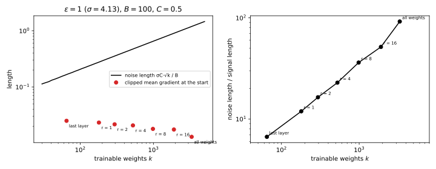
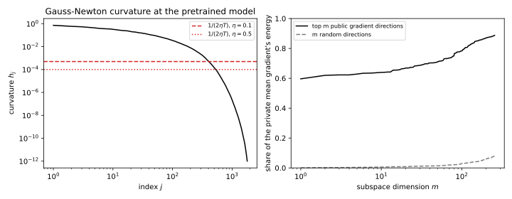
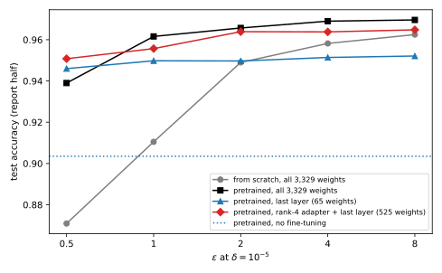

41 Public data and private fine-tuning
41.1 Why this matters
Training with differential privacy (DP) from random weights, by stochastic gradient descent (SGD) with per-example clipping and Gaussian noise, DP-SGD (DP-SGD), costs little on the part’s running example at \(\varepsilon = 8\) and a great deal at \(\varepsilon = 1\) and below. The most accurate private models are not trained that way. They start from a model pretrained non-privately on a large public dataset and only fine-tune it privately on the sensitive data, and at the same \(\varepsilon\) they are far more accurate than the same models trained privately from scratch (Tramèr & Boneh 2021; Yu et al. 2022; Li et al. 2022; De et al. 2022). A second practice helps on top of that: fine-tuning only a small part of the model often beats fine-tuning all of it under DP, although without privacy it would usually be the other way round.
Both follow from one idea: the noise is paid per trainable direction, the signal is not. DP-SGD adds noise of the same size to every coordinate it updates, while the useful part of the gradient is bounded in length however many coordinates there are, and usually concentrated in a few directions. A coordinate the task does not need only collects noise. Public data helps twice: it moves the starting point close to a good model, so little remains to be learned privately, and it tells you, for free, which few directions that remainder lies in. What it does not do is protect the people in the public data.
41.2 Why dimension costs, and when it does not
Each step of DP-SGD adds Gaussian noise of standard deviation \(\sigma C\) to a sum of per-example gradients clipped to length \(C\), where \(\sigma\) is the noise multiplier, and divides by the expected batch size \(B\). Nothing in the privacy proof depends on which weights the gradient is taken with respect to, so whatever you train, the accountant gives the same \(\varepsilon\). What changes is the noise. Over \(k\) trainable coordinates, a Gaussian vector with standard deviation \(s = \sigma C/B\) in each coordinate has length about \(s\sqrt k\), because its squared length is a sum of \(k\) terms of mean \(s^2\): \[\text{noise length} \approx \frac{\sigma C\sqrt k}{B}. \tag{41.1}\]
The signal, the average clipped gradient, is at most \(C\) long whatever \(k\) is, and it can be longer when \(k\) is smaller, because each record’s gradient restricted to fewer coordinates is shorter and less often clipped. The part’s running example shows both effects: 50-dimensional Gaussian inputs labelled by a fixed random network, \(n = 10{,}000\) private records, a student network with 3,329 weights pretrained on a related public task (Section 41.6), and DP-SGD with sampling rate \(q = 0.01\), \(C = 0.5\) and 10,000 steps, which needs \(\sigma = 4.13\) for \(\varepsilon = 1\) at \(\delta = 10^{-5}\). From the pretrained weights, the signal is 0.0130 long when all weights are trained, 0.0207 for a rank-4 adapter with the last layer, and 0.0250 for the last layer alone. At \(\varepsilon = 1\) the noise is 92.0 times the signal for all weights, 22.9 times for the adapter and 6.7 times for the last layer (Table 41.1, Figure 41.1). A signal of constant direction outgrows a random walk of noise after about \((\text{noise}/\text{signal})^2\) steps: 8,455, 523 and 44 steps.
| \(\varepsilon\) | \(\sigma\) | All weights, \(k = 3{,}329\) | Rank-4 adapter and last layer, \(k = 525\) | Last layer, \(k = 65\) |
|---|---|---|---|---|
| 0.5 | 7.72 | 2.227 | 0.884 | 0.311 |
| 1 | 4.13 | 1.191 | 0.473 | 0.166 |
| 2 | 2.28 | 0.658 | 0.261 | 0.092 |
| 8 | 0.917 | 0.265 | 0.105 | 0.037 |

Yet large language models with hundreds of millions of weights are fine-tuned privately with good results, so the count \(k\) cannot be the whole price. It is not, because noise only hurts in directions the loss cares about. Model the loss near the starting point as a quadratic. In a direction with curvature \(h\), noise kicks the weights around and the curvature pulls them back. A curved direction reaches a steady state and charges a fixed amount for it; a nearly flat direction keeps accumulating kicks but charges almost nothing for them, because moving along it barely changes the loss. Adding this up over \(T\) steps of step size \(\eta\) gives a loss increase of about \[\Delta \approx \frac{\eta s^2}{4}\,d_{\text{eff}}, \qquad d_{\text{eff}} = \sum_{j=1}^k\Big(1 - (1 - \eta h_j)^{2T}\Big), \tag{41.2}\] where \(h_j\) are the curvatures of the trainable directions. Each term is close to 1 for a direction whose curvature is above about \(1/(2\eta T)\) and close to 0 below it. So the effective dimension \(d_{\text{eff}}\) roughly counts the directions the noise has time to fill, and it is at most \(k\). Li, Liu et al. (2022) give this kind of explanation for why private fine-tuning of large models does not suffer from their size.
On the running example, at the pretrained weights with \(\eta = 0.1\) and \(T = 10{,}000\), only 406 of the 3,329 directions have curvature above \(1/(2\eta T) = 5 \times 10^{-4}\), and \(d_{\text{eff}} = 451\); for the last layer, \(d_{\text{eff}} = 60.2\) of 65. Full fine-tuning’s noise is 7.2 times longer than the last layer’s, and by Equation 41.2 it costs only about 7.5 times more, not the 51 times that the ratio of weight counts suggests. Freezing weights can only lower \(d_{\text{eff}}\), but it adds bias: a frozen direction the task needs can never be learned. And \(d_{\text{eff}}\) grows with \(\eta T\), so a larger step size fills more flat directions with noise, one reason private fine-tuning wants smaller step sizes than training from scratch. The quadratic is a local model and loss is not accuracy, so use Equation 41.2 to compare strategies, not to predict accuracy.
41.3 The last layer: linear probing
The simplest strategy freezes everything except the last layer and trains a linear classifier on the frozen features, linear probing. Since the features come from public data, they are a fixed transformation of each record, and the problem becomes private convex empirical risk minimization (ERM) in \(k\) dimensions, where the methods and rates are known (Private ERM). Tramèr & Boneh (2021) showed that this beats end-to-end private training on standard image benchmarks at moderate budgets, even with handcrafted features.
A probe’s error splits in two. The feature gap is the distance from the best linear model on these features to the best model of any kind; it is paid even with infinite data and no privacy. The privacy cost is private convex ERM’s, which falls like \(\sqrt k/(n\varepsilon)\) up to logarithmic factors (Bassily, Smith & Thakurta 2014). So features cap the accuracy, and privacy only decides how close you get to the cap. On the running example, the pretrained network labels 0.9035 of the private test inputs correctly without any private data. Fitting its last layer exactly and non-privately on the 10,000 private records raises this to 0.9536, the probe’s ceiling, against 0.9606 for a network trained non-privately from scratch, a feature gap of 0.007. The private probe reaches 0.9478 at \(\varepsilon = 0.5\) and 0.9514 at \(\varepsilon = 8\): within 0.006 of its ceiling at every budget, and unable to pass it at any.
That makes the probe the safe first baseline: convex, with few hyperparameters, and if it meets your accuracy target there is little reason to train more.
41.4 Low-rank adapters
When the features are not quite right for the new task, the probe stops at its ceiling, and training all weights pays for every weight. Low-rank adaptation (LoRA) (Hu et al. 2022) sits in between. It freezes each pretrained matrix \(W_0\), of size \(d_{\text{out}} \times d_{\text{in}}\), and learns a correction \(W = W_0 + UV^\top\) with \(U\) of size \(d_{\text{out}} \times r\) and \(V\) of size \(d_{\text{in}} \times r\), starting from \(U = 0\) so that training begins exactly at the pretrained model. It trains \[k = r(d_{\text{in}} + d_{\text{out}}) \tag{41.3}\] weights instead of \(d_{\text{in}}d_{\text{out}}\). A rank-8 adapter on a \(768 \times 768\) projection of a transformer trains 12,288 weights instead of 589,824, 48 times fewer, so its noise is 6.9 times shorter. Its per-example gradients are outer products of short vectors, so their norms can be computed without forming them, the ghost clipping of DP-SGD; on the running example the ghost norms agree with explicitly formed gradients to a relative difference of \(3.3 \times 10^{-16}\). The privacy guarantee is DP-SGD’s with the same \(q\), \(\sigma\) and number of steps.
What the restriction costs is direction. At the start, with \(U = 0\) and \(V\) random, the update projects the true gradient onto a random \(r\)-dimensional subspace of the layer’s inputs, which captures little of it. As training proceeds \(V\) moves and the subspace aligns with the useful directions. Adapters work when the change the new task needs is itself close to low rank, and the rank trades bias against noise. Yu et al. (2022) found that private fine-tuning of language models with LoRA matches or beats private full fine-tuning; Li, Tramèr, Liang & Hashimoto (2022) found full fine-tuning matching or beating the parameter-efficient methods once it had large batches and a tuned step size, which Equation 41.2 allows, since full fine-tuning pays \(d_{\text{eff}}\), not \(k\). The published evidence goes both ways. The adapter’s other advantages are certain: it stores only \(k\) numbers per task and clips much smaller gradients.
41.5 Gradients near a public subspace
If noise costs little in directions the loss does not use, you could add noise only in the directions it does use, if you knew them. Public data gives an estimate: compute per-example gradients on public records, find their top principal directions, and project the private clipped gradient sum and its noise onto those \(m\) directions. Projection never lengthens a vector, so the sensitivity is still \(C\), and because the subspace is fixed before any private data are read, the guarantee is unchanged. This is projected DP-SGD (Zhou, Wu & Banerjee 2021).
The trade is between noise and bias. The noise falls by \(\sqrt{p/m}\), where \(p\) is the number of weights. The signal keeps only the fraction \(f_m\) of its energy that lies in the subspace, and the lost part is a bias that no number of steps recovers. If the public data resemble the private task, \(f_m\) is close to 1 for small \(m\) and the trade is excellent. If they do not, the subspace is no better than a random one, \(f_m \approx m/p\), and the projection removes as much signal as noise. On the running example, a single direction of 500 public per-example gradients holds 60% of the private gradient’s energy, and 64 directions, 2% of the dimensions, hold 73%, against 2.2% for 64 random directions. At \(\varepsilon = 1\) the kept signal outgrows the noise after 222 steps in the 64-dimensional subspace, against 8,455 for all weights; the price is the 27% outside it, which a fixed projection never learns, so methods recompute the subspace as training proceeds. The same concentration is what makes \(d_{\text{eff}}\) small for full fine-tuning (Figure 41.2).

41.6 Pretraining and fine-tuning the running example
The public task labels 50,000 inputs from the private input distribution with a related teacher: the private teacher’s hidden units, each slightly perturbed, read out with weights turned partly towards a random vector. It agrees with the private teacher on 0.9004 of the private test inputs, so pretraining helps without solving the private task. The student is pretrained on it non-privately and then fine-tuned with DP-SGD in four ways: all weights from a random start (scratch), all weights from the pretrained ones (full), the last layer only, and a rank-4 adapter on the first layer plus the last layer. Each method’s step size was chosen at \(\varepsilon = 1\) on half of the private test set, without paying for that choice (Hyperparameter tuning shows how to), and accuracy is reported on the other half.
| Scratch | Full | Last layer | Adapter, rank 4 | |
|---|---|---|---|---|
| Trainable weights \(k\) | 3,329 | 3,329 | 65 | 525 |
| \(\varepsilon = 0.5\) | \(0.8589 \pm 0.0075\) | \(0.9395 \pm 0.0006\) | \(0.9478 \pm 0.0010\) | \(0.9464 \pm 0.0005\) |
| \(\varepsilon = 1\) | \(0.9246 \pm 0.0050\) | \(0.9599 \pm 0.0013\) | \(0.9497 \pm 0.0000\) | \(0.9616 \pm 0.0001\) |
| \(\varepsilon = 2\) | \(0.9518 \pm 0.0010\) | \(0.9663 \pm 0.0001\) | \(0.9519 \pm 0.0005\) | \(0.9653 \pm 0.0002\) |
| \(\varepsilon = 8\) | \(0.9611 \pm 0.0012\) | \(0.9677 \pm 0.0001\) | \(0.9514 \pm 0.0005\) | \(0.9655 \pm 0.0001\) |
| Non-private | 0.9606 | 0.9704 | 0.9536 | — |
On this task pretraining is worth about a factor of eight in \(\varepsilon\) (Table 41.2). Every fine-tuning method at \(\varepsilon = 0.5\) beats training from scratch at \(\varepsilon = 1\), and the adapter at \(\varepsilon = 1\), 0.9616, matches training from scratch at \(\varepsilon = 8\) and the non-private model trained from scratch.
Which weights to train depends on the budget, as the noise lengths and the ceiling explain together. At \(\varepsilon = 0.5\) the last layer is best: its noise is 7.2 times shorter than full fine-tuning’s, and its ceiling, 0.9536, is not yet binding. From \(\varepsilon = 1\) on it is stuck near that ceiling, while the adapter and full fine-tuning keep improving, because they can correct the features and the noise is now small enough to let them. The adapter is never more than 0.0022 below the best method at any budget, so it is the robust middle choice. Do not over-read the small differences: two runs estimate the spread only roughly, a repeat of the adapter at \(\varepsilon = 1\) gave a standard deviation of 0.0023, and differences between the pretrained methods below about 0.005 are not rankings (Figure 41.3, a separate set of single runs, orders them differently at \(\varepsilon = 0.5\) and 1). Step sizes matter as much as the method: full fine-tuning lost 1.3 points at a step size three times too large, and the best step size for full fine-tuning and the adapter, 0.1, was 2.5 times smaller than from scratch, as the effective-dimension argument predicts.

41.7 What public data does not buy
The guarantee treats the public data as a fixed input. For every fixed public dataset, the map from the private dataset to the fine-tuned model is \((\varepsilon, \delta)\)-DP, because the DP-SGD proof holds for any starting weights chosen independently of the private data. With respect to the public data there is no guarantee at all: non-private pretraining can memorize individual records (Memorization and extraction), and the fine-tuned model inherits whatever the pretrained weights encode.
This matters most for a person whose record is in both datasets. At \(\varepsilon = 1\) and \(\delta = 10^{-5}\), any test of whether a record was in the private set that has a false positive rate of 0.01 has a true positive rate of at most \(e \times 0.01 + 10^{-5} = 0.0272\). If the same record is also in the public set, a membership test against the pretrained model, such as the likelihood-ratio attack of Membership inference, is bounded by nothing; it may fail in practice, but no theorem says it will. Compare a record that appears twice in the private set: group privacy gives the two copies \((2\varepsilon, 2e^\varepsilon\delta) = (2, 5.44 \times 10^{-5})\), weaker but real. A copy in the public set is worse than a duplicate in the private set. Web-scale “public” data contain posts, profiles and leaked documents, so overlap with private medical notes or emails is a real risk, and Tramèr, Kamath & Carlini (2024) argue that “differentially private” should be used with care for such models. Deduplication against the private set is the minimum check, and exact matching protects copies, not people: paraphrases and other records about the same person survive it.
Two further caveats. Benchmarks whose “private” set resembles curated public data can overstate what the method does on genuinely sensitive data, which is often unlike anything public. And any choice made by looking at private data, such as which public model to start from or the step size, is part of the private computation and must be paid for; choosing on public validation data is free. When you report \(\varepsilon\), say what the public data are, how they were obtained, whether overlap was checked, and that the guarantee covers the private data given the pretrained model.
41.8 Code
Before choosing what to fine-tune, count: the noise length for each candidate set of trainable weights, at the \(\sigma\) your accountant gives, is the first number to compare with the signal.
from math import sqrt
def noise_length(sigma: float, clip: float, batch: float, trainable: int) -> float:
"""Length of DP-SGD's noise on the averaged gradient over `trainable` coordinates."""
return sigma * clip * sqrt(trainable) / batch
def lora_weights(rank: int, d_in: int, d_out: int) -> int:
"""Trainable weights of a rank-r adapter W0 + U V^T on a d_out x d_in matrix."""
return rank * (d_in + d_out)
adapter = lora_weights(4, 51, 64) + 65 # first-layer adapter plus the 65-weight last layer
print(adapter) # 525
print(f"{noise_length(4.13, 0.5, 100, 3329):.3f}") # 1.191
print(f"{noise_length(4.13, 0.5, 100, adapter):.3f}") # 0.473
print(f"{noise_length(4.13, 0.5, 100, 65):.3f}") # 0.166
big = lora_weights(8, 768, 768)
print(big, 768 * 768 // big) # 12288 48
print(f"{sqrt(768 * 768 / big):.1f}") # 6.9The full edition’s script builds the public task, pretrains, runs every fine-tuning strategy and estimates the curvature and the public subspace; it takes about four minutes:
uv run python code/part05-dp-ml/public_data.py41.9 Cheat sheet
| Result | Formula | Notes |
|---|---|---|
| Noise length | \(\sigma C\sqrt k/B\) over \(k\) trainable weights | Same \(\varepsilon\) whatever is trained |
| Noise cost | \(\approx\frac{\eta s^2}{4}d_{\text{eff}}\), \(d_{\text{eff}} = \sum_j(1 - (1 - \eta h_j)^{2T}) \le k\) | Counts directions with curvature above about \(1/(2\eta T)\) |
| Linear probe | Private convex ERM in \(k\) dimensions | Error = feature gap + privacy cost; cannot pass its ceiling |
| LoRA | \(r(d_{\text{in}} + d_{\text{out}})\) weights per matrix | Ghost clipping applies; robust middle choice |
| Public subspace | Noise down by \(\sqrt{p/m}\), signal kept \(f_m\) | Subspace from public data only; \(1 - f_m\) is bias |
| Pretraining | About a factor of eight in \(\varepsilon\) on the running example | Depends on how close the public task is |
| Guarantee | \((\varepsilon, \delta)\) for the private data given the public data | Nothing for records in the public data |
41.10 Further reading
- Tramèr & Boneh, “Differentially Private Learning Needs Better Features (or Much More Data)” (ICLR 2021): why linear probing on good features beats end-to-end private training at moderate budgets.
- Li, Tramèr, Liang & Hashimoto, “Large Language Models Can Be Strong Differentially Private Learners” (ICLR 2022), and Yu et al., “Differentially Private Fine-tuning of Language Models” (ICLR 2022): full and parameter-efficient private fine-tuning, and the hyperparameters that make each work.
- Li, Liu, Hashimoto, Inan, Kulkarni, Lee & Thakurta, “When Does Differentially Private Learning Not Suffer in High Dimensions?” (NeurIPS 2022): the effective-dimension view behind Section 41.2.
- Tramèr, Kamath & Carlini, “Position: Considerations for Differentially Private Learning with Large-Scale Public Pretraining” (ICML 2024): what public pretraining does and does not protect, and how benchmarks mislead.
Derivations. Every result in this chapter is derived step by step in the full edition’s chapter.